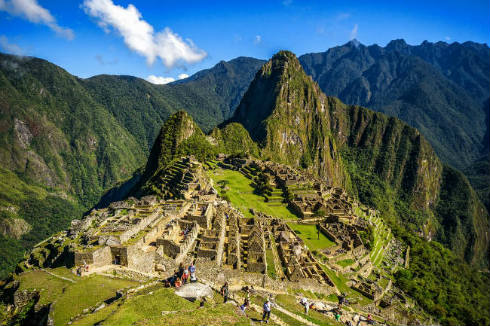
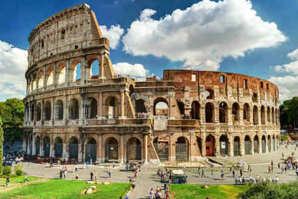
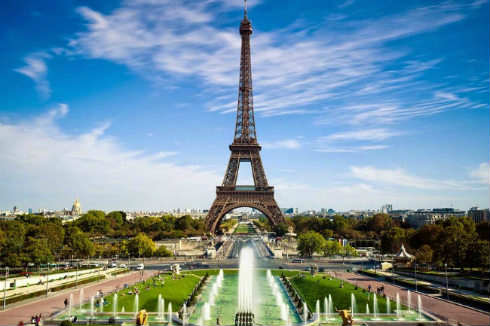
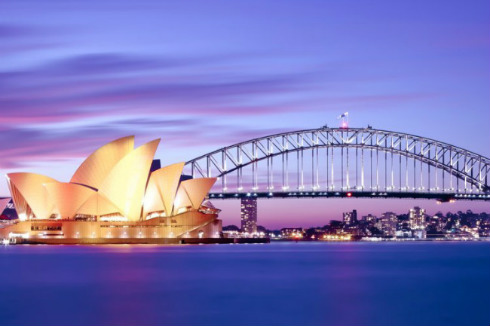
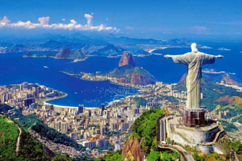
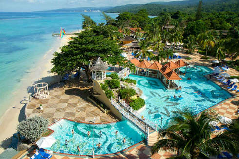
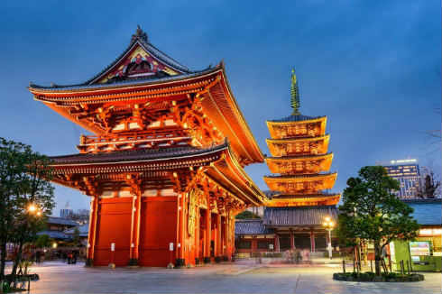
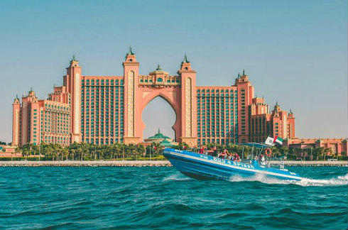

We offer a variety of destinations. The following are some of the destinations that we are currently offering:

Machu Picchu, Peru Experience the mystical Incan culture by witnessing the magestic architecture impossibly built in the high Andes Mountains. This is a trek that will challenge you physically, so get ready for the quest of your life!

Rome, Italy Rome wasn't built in a day--and you'll need much more than a day to take in this timeless city. Enjoy some of the most memorable meals of your life here, too, from fresh pasta to succulent fried artichokes or a tender oxtail stew.

Paris, France The Global center for art, fashion, gastronomy and culture. Its 19th-century cityscape is crisscrossed by wide boulevards and the River Seine. Visit landmarks like the Eiffel Tower, and Gothic Notre-Dame cathedral.

Sydney, Australia Best known for its harbourfront Sydney Opera House, with a distinctive sail-like design. Massive Darling Harbour and the smaller Circular Quay port are hubs of waterside life, with the arched Harbour Bridge and esteemed Royal Botanic Garden nearby.

Rio De Janeiro, Brazil Rio de Janeiro is a world famous city and a tourist paradise. You can visit the beautiful Copacabana and Ipanema beaches. At other times, try dancing the samba, and enjoying their diverse barbecue cuisine.

Jamaica, Caribbean Experience morning’s glorious sunrise until the sea swallows the sun at night in Jamaica. The clearest and most beautiful beaches in the world await you!

Tokyo, Japan Tokyo, Japan’s busy capital, mixes the ultramodern and the traditional, from neon-lit skyscrapers to historic temples. The opulent Meiji Shinto Shrine is known for its towering gate and surrounding woods. The Imperial Palace sits amid large public gardens.

Dubai, UAE Dubai is known for luxury shopping, ultramodern architecture and a lively nightlife scene. Burj Khalifa, an 830m-tall tower, dominates the skyscraper-filled skyline. On artificial islands just offshore is Atlantis, The Palm, a resort with water and marine-animal parks. Back to Top